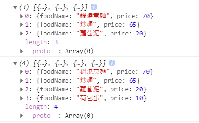

物件跟陣列資料處理之術
陣列與物件使用時機
- 陣列使用時機：當資料需要使用大量且同性質的資料
- 物件使用時機：要描述一個東西對應的特徵和行為。
在做資料整理時，一樣把握一個原則：資料要先定義初始化
陣列
學習重點：
基本設定：讀取陣列、抓取長度(length)
陣列方法：push、unshift、pop、slice、splice
進階陣列運用：filter、map、forEach …
陣列基本設定
這是一串陣列
1
let colors = ["red","black","pink"];
讀取陣列
1
2let liaoLikeColor = colors[2];
// liaoLikeColor ＝ pink抓取長度(length)
1
2
3let colors = ["red","black","pink"];
let colorsLength = colors.length;
// colorsLength = 3寫入陣列（將資料依照位置寫入空陣列裡）
1
2
3
4
5
6
7let colors = [];
// 寫入
colors[0] = 'blue';
colors[2] = 'red';
colors[4] = 'pink';
console.log(colors);
// colors[3] 會是undefined
陣列方法運用
push寫入資料（在最後面做增加）
可以單筆 or 多筆寫入
1
2
3let colors = ['blue','red'];
colors.push('black','pink','orange')
// colors = ['blue','red','black','pink','orange'];unshift寫入資料（在最前面做增加）
可以單筆 or 多筆寫入
1
2
3let colors = ['blue','red'];
colors.unshift('black','pink','orange')
// colors = ['black','pink','orange','blue','red'];pop刪除資料（刪除最後一筆）
1
2
3let colors = ['blue','red'];
colors.pop();
// blueshift刪除資料（刪除最前面一筆）
1
2
3let colors = ['blue','red'];
colors.shift();
// redsplice刪除資料（刪除指定資料）
1
2
3let colors = ['blue','red','yelllow'];
colors.splice(1,1);//['blue','yellow']
//起始位置 ,要往後刪除幾筆資料（包括自己）
進階陣列運用
filter
filter() 是 JavaScript 的一個陣列處理方法，用於篩選出指定元素，並回傳一個陣列。filter() 不會修改原來的陣列，而是會產生一個新的陣列，並且可以指派給其他變數。
語法如下：
1
2
3let arr = [];
//回傳一個新的陣列，並指派給變數
let newArr = arr.filter();以下為 filter() 的用法：
filter() 內需放入一個函式，並回傳一個值。filter() 會一一將陣列中的每個元素帶入函式測試，如果函式的回傳值為 true，則會將當前的元素保留至新陣列中，若為 false 則不保留。
callback 函式常見會帶有三種參數，範例如下:
1
2
3
4
5
6
7
8
9
10
11
12
13
14
15
16
17
18
19
20
21
22
23
24
25
26
27
28
29let food = [
{
foodName: '鍋燒意麵',
price: 70
},
{
foodName: '炒麵',
price: 65
},
{
foodName: '蘿蔔泥',
price: 20
},
{
foodName: '荷包蛋',
price: 10
}
];
// item: 目前正在處理的元素。
// index: 目前正在處理的元素之索引
// array: 呼叫 filter 的原始陣列，在此為 food。此參數較為少用
let target = food.filter(function(item, index, array){
// 回傳值，如果為 true，則將正在處理的這個 item 加入新陣列
return item.price >= 20;
})
console.log(target);
console.log(food);- Chrome 的輸出結果
map
- map() 與 filter() 有許多共通點，以下
皆為 JavaScript 的陣列方法。都不會影響到原來的陣列，而是會回傳一個新的陣列。都是透過 callback 函式來處理陣列中的元素，函式參數可帶入「目前正在處理的元素」、「正在處理的元素索引」、「原始陣列」。
- 而它們最大的差異在於，以下
filter() 產生的新陣列只會包含「符合回傳條件」的元素，map() 則是會包含「運算後」的所有元素。
舉例來說：
- filter()
1
2
3
4
5
6let a = [1,2,3,4];
let newa = a.filter(function(item){
return item > 1;
});
console.log(newa);
// newa = [2,3,4];- map()
1
2
3
4
5
6let a = [1,2,3,4];
let newa = a.map(function(item){
return item > 1;
});
console.log(newa);
// false true true true- 得出的結論：
- 可看出 filter() 陣列回傳的是 「判斷為 true 的元素」，map() 陣列回傳的是 「元素的運算結果」。
- 注意，map() 一定會替原始陣列的每個元素回傳一個值，如果不回傳則為 undefined
1
2
3
4
5
6let a = [1,2,3,4];
mapEmpty = a.map(function(item, index, array){
/*假設不設定回傳*/
});
console.log(mapEmpty);
// undefined undefined undefined undefined
forEach
- forEach() 是屬於 「陣列」 的方法，會將陣列內的每個元素一一傳入，並執行給定的函式一次。 forEach() 內的函式常見會帶有三個參數
1 | let data = ["a", "b", "c"]; |
這邊需要特別提醒，在 forEach() 函式內用 return 是無效的。除非程式碼有誤，否則並沒有中止 forEach() 的辦法
1 | let data = ["a", "b", "c"]; |
- 幾筆資料，就會跑幾次
- 只有陣列可用（物件不行）
1 | let data = [10, 20]; |
forEach案例
篩選出陣列裡面有幾個偶數?
1
2
3
4
5
6
7
8
9
10
11
12
13// 篩選出陣列裡面有幾個偶數
// 搭配 if
let data = [10,11,45,66,77,88,44,34,20,35,79,63,9];
let newData = []; //放入新陣列
let total = 0; //計算有幾筆？
data.forEach(function(item,index){
if(item % 2 == 0){
newData.push(item);
total +=1;
}
})
console.log(newData);
console.log(total);男女人數計算機-透過物件整合資料
- 懂得整合資料、處理資料（端看要處理的資料，決定資料內容形式為 0 、[]、{} ）
1 | let data = [ |
1 | //取出物件資料 |
物件
學習重點：
- 如何讀取物件的值
- 新增、修改方式
讀取物件的值
方法一：homes.dog
1
2
3
4
5let homes = {
owner:'bob',
dogs: 'come'
}
let bobdog = homes.dogs方法二：homes[‘dogs’]、homes[round2]
- 當「某個變數的值」跟「屬性名稱」相同時，可直接以該變數取得同樣名稱的屬性 value，外層不用再多包覆單、雙引號來做存取
1
2
3
4
5
6
7
8
9let homes = {
owner:'bob',
dogs: 'come'
} // [放入字串]
let bobdog = homes['dogs'];
console.log(bobdog);
// 賦值到變數上，再使用物件取值
let round2 = 'dogs';
console.log(homes[round2]);
新增物件屬性與值
1 | let homes = {}; |
修改物件屬性的值
1 | let homes = { |
delete 刪除物件屬性與值
1 | let homes = { |
- 物件包物件寫法可以把資料做有效的分類